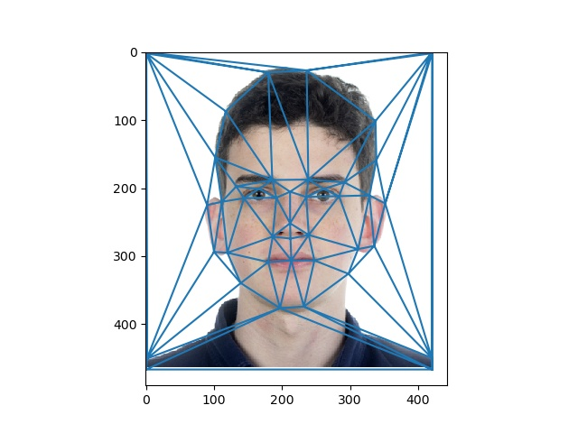
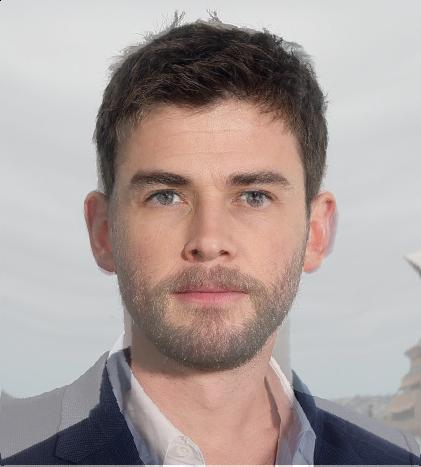
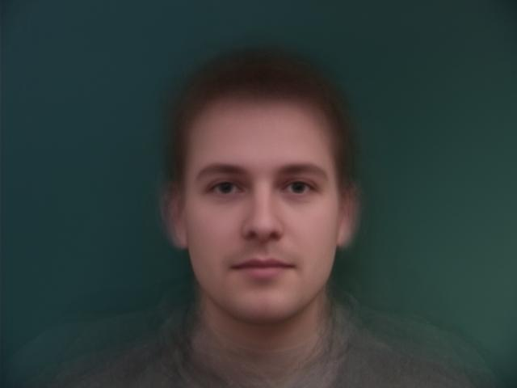
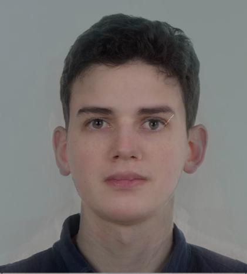

Face Morphing
Table of Contents
1 Introduction
Face morphing is a very aesthetic and fun tool for general purposes. It was used on Michael Jackson’s “Black and White” music video clip as well as in various fun Instagram Filters. The idea for this algorithm is to draw points that highlight our features and create subdivisions relative to those. Once we have that, we can start morphing two faces, since we have correspondences in both surfaces. The following sections will explain it a little bit better.
2 Mid-way Face
For the first two sections, I decided to use an image of myself and Chris Hemsworth. The images are the following:
Once we have these images loaded, I drew a few points on facial features such as the nose, mouth, eyes and ears. Using Delaunay Triangulation, I specify the triangle surfaces for my image and apply to both of them. We end with this configuration:

With these triangles set, we can create the mean configuration between both images and get the mean triangles. Going through each triangle in both images and Transforming each coordinate into a coordinate inside the mean triangle, we can get a fine result. For efficiency purposes, we don’t use a for loop in the transform. Instead of that, we get every coordinate from the specific triangle inside a matrix and apply an Affine transform matrix. The results follow.
Each image with only spatial blending.
Final Mid-way face with color blending.

3 Morphing Sequence
Having the Mid-way face process clarified, creating a morphing sequence is pretty straightforward. Setting a number α as interpolation handler, we can simply weight out the triangle averaging and the color blending. Thus, my morphing sequence goes as follows:
4 Population Mean Face
Finally, I downloaded the Image database from the Technical University of Denmark - DTU to compute a population’s mean face. To do that, we calculate the average triangles and adjust every picture to it, finalizing by blending all the colors together. This population consists of 40 people.
(Original image, Delaunay triangulation, image morphed to mean shape, respectively)
(Original image, image morphed to mean shape, respectively)

(Mean face of population)
Now, tweaking the images so they are the same size and ratio as my image, we can get the following transforms:
(mid-way faces: normal(top left), only shape (top right), only color (bottom left))
mean face with my geometry
5 Caricature
Now that we have the averages calculated, let’s find out what are my unique features using that as reference. By extrapolating the morphing algorithm, we get this result:
Considering that my face isn’t really aligned to the mean pictures and I used a Delaunay triangulation instead of the given triangulation from the database, we get that triangle artifact due to triangles being on top of each other. I added a quick fix by removing all the signals greater than 1 and replacing them with the original image’s signal.
α = 2 (left), α = -1 (right)
So to demonstrate this in a better way, we can see that in one of the samples we have from the population:
Since the color is a bit off, we can extrapolate the shape only. (α = 0, 1.5, 2, respectively)
(α = 0, 1.5, 2, respectively)
Of course it comes a point in which even the faces in the mean can have the triangles stacked by extrapolation, which is what happens in the last ones.
6 Bells and Whistles
6.1 Changing genders
The population dataset provides us with female and male samples, so it’s easy to extract the gender means. Once we have those, we can change my facial features to look more like the man’s mean or more feminine. The results follow.
female mean (left), male mean (right)

Morphing with male mean. (mid-way faces: normal(top left), only shape (top right), only color (bottom left))

Morphing with female mean. (mid-way faces: normal(top left), only shape (top right), only color (bottom left))
Tweaking the α interpolation coefficient a little bit, we have a more feminine blended version of me:

6.2 Creating a Facial Feature space!
What I also thought was interesting was to morph my image to a already morphed image. This would give me a face space to work with, meaning I could interpolate myself with the interval in between the female and male means.
In my program, I set α₂ to be 0.5, but that’s arbitrary. This was the result:
The transition is noticeable but kinda weak. By extrapolating it, however, we get a much better result, even better than just morphing with the female mean, we are removing the male features and the other way around as well! Notice how my freckles are highlighted!
Another cool result was to move around completely different images such as the population samples I displayed in previous sections.